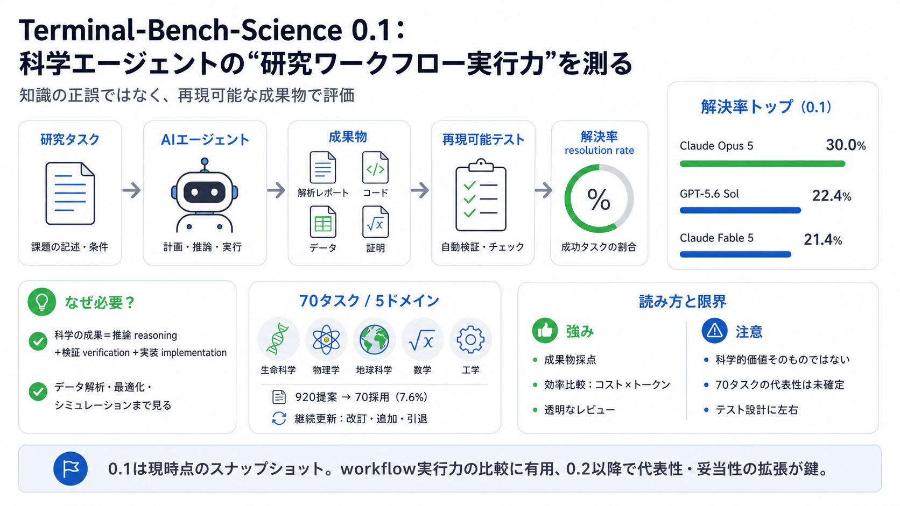

Claude Opus 5 vs GPT-5.6: 1M Context & Launched Benchmarks
ARC-AGI-3 (novel problem solving): Opus 5 scored 30.2%, roughly 4x GPT-5.6 Sol's 7.8%. Analysts noted Opus 5 used explic…

ARC-AGI-3 (novel problem solving): Opus 5 scored 30.2%, roughly 4x GPT-5.6 Sol's 7.8%. Analysts noted Opus 5 used explic…
On ARC-AGI-3, Opus 5 scored 30.2% versus Sol's 7.8%, showing stronger novel reasoning. On the older static ARC-AGI-2, so…
| Category | Claude Opus 5 | GPT-5.6 Sol | Weighted basis | Reading | | Reasoning | 90.4 | 92.5 | Like-for-like1 vs 1 ro…
The first run used Claude Opus 4.8 inside Claude Science. The second used GPT-5.6 sol inside Codex. The two systems have…
Claude Opus 5 and GPT-5.6 Sol are close enough that a one-line winner would mislead you. Opus 5 has the stronger publish…